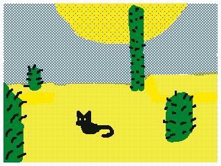
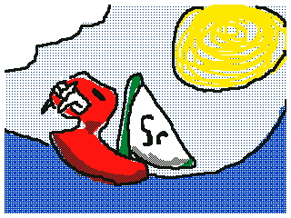
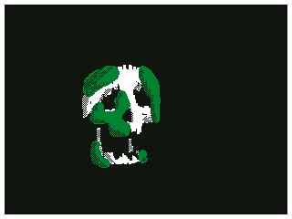
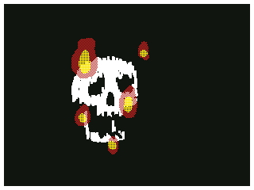
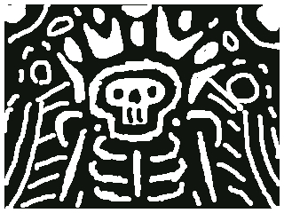
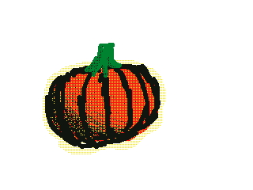

Synapse
Description:
This drawing is mostly just a bunch of squiggles. It's a classic warmup exercise without even
intending to be. I don't remember the exact order, but I did the yellow for noise, then I felt
inspired by audio levels and maybe cacti or creepers for the green poles, they kinda look like a
city skyline now that I'm looking at it. The red is meant to be an intruding observer, something
like an eye or a ufo. The blue bubbles are there because I felt like it, or whatever reason it
was I
forgor 💀.

Rolling HillZ
Description:
This one is a little more straightforward. I was still warming up and I wanted to mess around
with the textures so I did the classic "Green hill, blue sky, white cloud, yellow sun in corner"
drawing that everyone has done as a kid. Then I added sonic because I thought the trail was a
good use for the textures I was experimenting with

Cat in a (Minecraft) Desert
Description:
I really wanted to push my ability to do detail with this one, I wanted it to be a clearly
blocky minecraft landscape. That did't really end up happening, the contrast between the two
different shades of sand also got absolutely obliterated when I exported the frames... I added a
cat after I accepted that it kinda just looked like a regular desert, I like the cat addition,
it saved it for me :)

King of Red Boats from Memory
Description:
All of these doodles were happening while I was waiting and listening during DnD. We're a band
of pirates and I had recently been playing Phantom Hourglass, so as a Wind Waker fan this
obviously put the better game on my mind and the king of red lions kinda just came to me while
doodling. I couldn't quite remember the details, but I like how it turned out! Our campaign is
on hiatus as of a day or so of writing and I wonder when/if we'll be back

Pigeon
Description:
You should probably read these in order, I drew them in an order and I'm writing about them in
an order, so it'll just make more sense to follow along. Anyways, this is a pigeon! I was
reaching peak boredom levels during DnD and I wanted to draw something simple so I drew a pigeon
for my GF.

Mossy Skull
Description:
At this point we reach the boredom + experimenting with new medium sweet spot. I drew a skull,
then made a few copies and did a different top layer for each. I didn't end up exporting all of
them to my PC and I might go back to do that. This mossy skull is when I really popped off with
my shading and layer usage. After this drawing I went back to the previous ones and added
shading to them as well. I'm really happy with how this one turned out, I think it's my favorite

Skull but Inspired by Minecraft
Description:
There were two skulls I remember not exporting: a skull with red eyes and serious shading that I
didn't love how serious it felt abd a low effort sans. Finally the one I did export: this
one is inspired by the minecraft painting that it looks like. I like that painting because it's
actually a real painting, and that painting's sketch is a digital piece that includes the
minecraft fire particle sprite. Its process was digital->physical->digital and that's how a
lot of the paintings are! Isn't that neat?

2-Bit Bones
Description:
I was still on an inverted color skull kick from the previous batch of skulls so I did some
reverse etching. I filled the screen black then erased and drew this. The goal was a lot of
abstract lines that I was roughly resemble a skeleton. Then I kept adding more :)

Pumpkin ;)
Description:
The pumpkin was just a shading doodle, I discovered that I can zoom in with R or L and an on
screen button. When zoomed in you can use all your regular tools, but the width is forced to 1.
I was testing out zooming in to add fine shading lines along my other ones. I also wanted to
make orange, a color that isn't on the palette. Also maybe don't look into the relationship
between trans girls and pumpkins :3

*Brrrraaaiiiiiinnnnssss*
Description:
I drew the zombie to test out drawing the blood with two different textures, we were also in the
middleof fighting a bunch of zombies. I actually happened to fall and have my warforged body
sink a zombie into the swamp mud and was prone for the duration of my time drawing this lol. The
design is something I kinda memorized, and it's semi inspired by Plants Vs. Zombies zombies. PvZ
on the DS is also a game I've been replaying recently, and during slow parts of DnD too!

My Take on a Starry Night
Description:
I don't remember the artistic process in making this, I kinda just blacked out and woke up with
a mini Van Gogh in my hands. Maybe he posessed me because he wanted to try DnD and left that as
a thank you from beyond the grave. I never thought about that, ghosts who know a creative craft
can offer you something from beyond the grave. All they gotta do is possess you and then make it
and boom you have a thing now, and they got to have a gross meat sack for a bit again! win! win!

Say "aaahhhhhhhh"
POV: Ur Getting Eaten
Description:
It's the inside of a mouth. Theoretically the 3D view should look good too, but I have a 2DS so
I can't do 3D :( It looks like a uvula, I dunno what else to say. Oh I know what to say!
"Aaaaaaaaaahhhhhhhh" Oh I just remembered what inspired this, I should say that. I was swallowed
by a froghemoth at this point, so I drew "POV: Ur getting eaten"